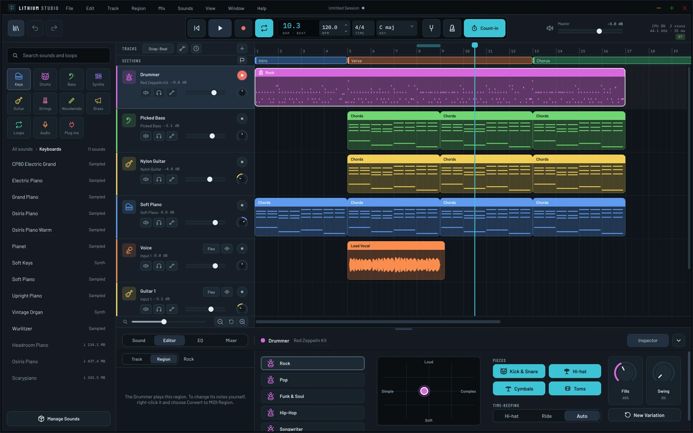
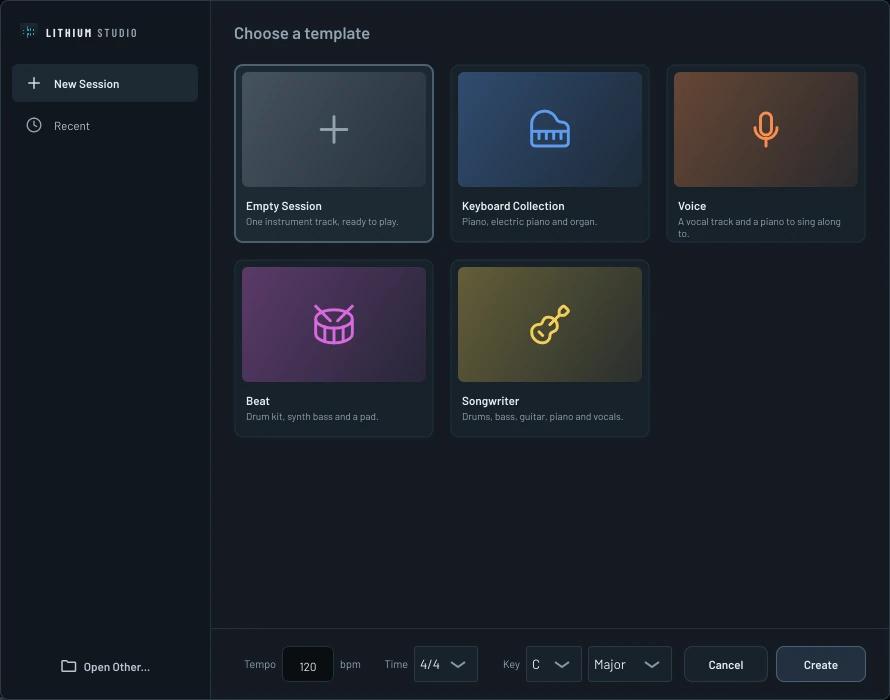
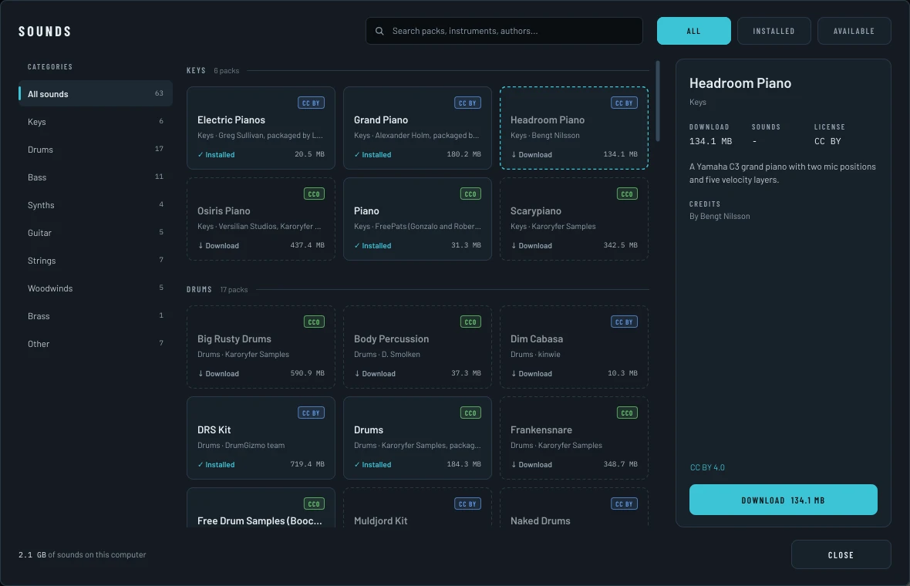
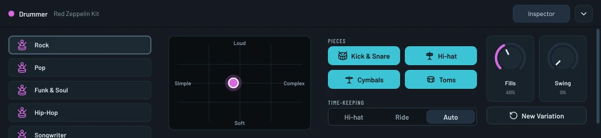
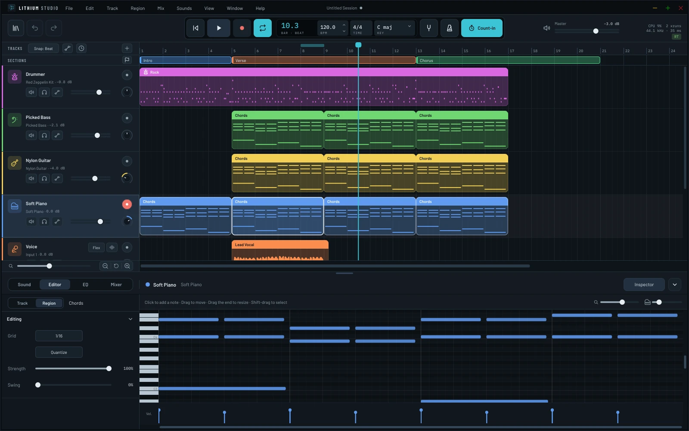
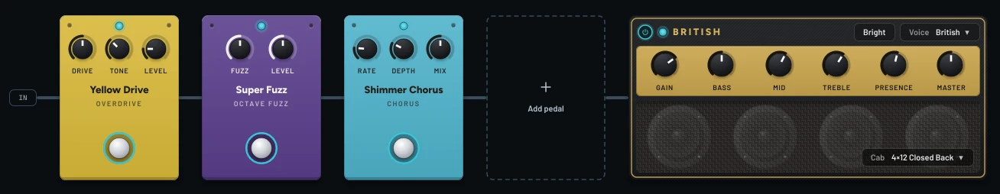
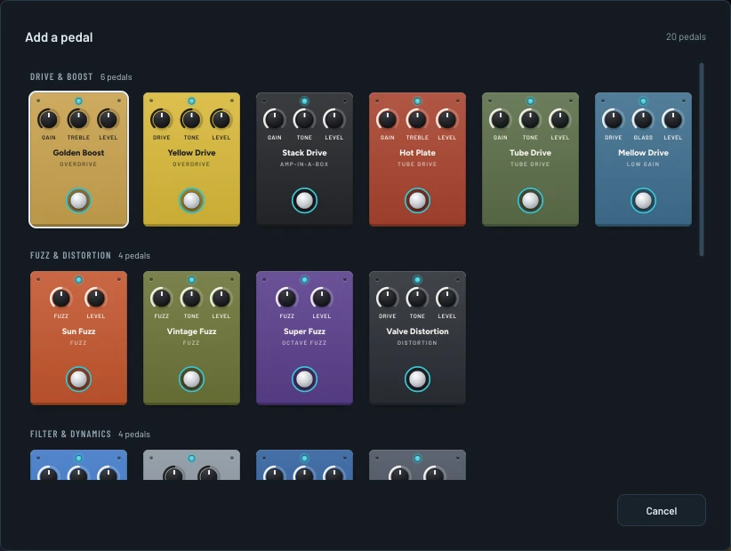
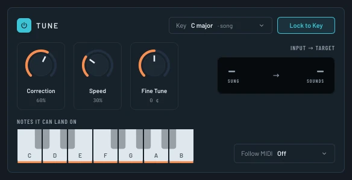
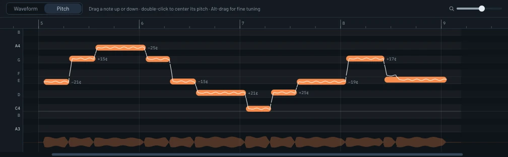
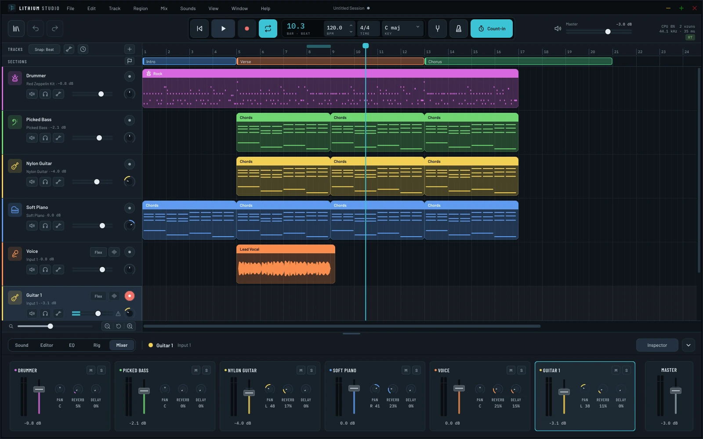

WriteBars 01–02
Play and record
Play instruments from a MIDI keyboard, your computer keyboard or the on-screen keys, or record a mic, a guitar or a stereo source, with a count-in if you like.
A free, open-source music studio for making songs. Instrument and audio tracks, a virtual drummer, a guitar pedalboard and amp, pitch correction for vocals, and a library of sounds and loops, in the spirit of GarageBand.
Download Watch the tour View on GitHub
Linux, Windows and macOS · GNU GPLv3 · The sibling of Lithium Drums

A walk through a song from start to finish: templates and tracks, the timeline, sounds and loops, editing notes and audio, the guitar rig, mixing and exporting.
Every region below is something Lithium Studio does. Press play and the playhead runs through them, or click any region to jump straight to it.
Play instruments from a MIDI keyboard, your computer keyboard or the on-screen keys, or record a mic, a guitar or a stereo source, with a count-in if you like.
Loops from the library follow your song's key and tempo, and the tempo and time signature can change partway through the song.
Mark the intro, verse and chorus above your tracks, then drag a section to move its music on every track, or Alt-drag to copy it.
Five styles of grooves played by real drummers. Choose how busy and how loud, which pieces play, how often it fills and how much it swings.
Twenty stompboxes and an amp with six voices and swappable cabinets, built from GxPlugins, Guitarix and KlonCentaur. There's a tuner and a noise gate, too.
Tune keeps a voice in key as you sing, from a gentle nudge to a hard, robotic snap. Or edit each sung note by hand in Pitch mode.
Drag the hits in a recording to new places while the audio in between stretches to fit, or quantize them to the grid like notes.
Lithium Basics is built in, with more packs a click away in Manage Sounds. Add a free Freesound.org API key and you can search thousands of free loops, too.
VST3 and LV2 on Linux and Windows, VST3 and Audio Units on macOS, scanned in a helper process so one that crashes is just skipped. Controllers from Akai, Arturia, Novation and more are mapped out of the box.
EQ and effects on every track, sends to a shared reverb and delay, and automation to change them over the song. Export the song or each track on its own.
A session is a single .lisession file holding every recording and loop it uses. Move it, back it up, or send it to a friend on any platform.
Recordings go to disk as you play and a recovery copy keeps up as you work. If the app ever crashes, your unsaved work comes back, even a take that was cut short.
Click any screenshot to see it full size.

Start from a template, from an empty session with one instrument to a full songwriter band, with the tempo, time and key already set.

Browse keys, drums, bass, synths, strings and more in the library beside the timeline, search every pack at once, and drag a sound or loop onto a track.
Lithium Basics comes with the app. Sounds › Manage Sounds… lists every other pack to download, update or remove, with its size, credits and license.
Get a free API key from Freesound.org, paste it into Lithium Studio, and the loop browser searches Freesound's community library alongside your own packs. Only loops you're free to use (CC0 and CC BY) are listed, and each one you add is saved with credit to its author.
Pick Rock, Pop, Funk & Soul, Hip-Hop or Songwriter, then drag the puck between simple and complex, soft and loud. Choose which pieces play and whether it keeps time on the hi-hat or the ride. It plays grooves real drummers recorded for the Groove MIDI Dataset, adds a fill before each section, and turns into an ordinary MIDI region whenever you'd rather edit the notes yourself.


Click to add a note, drag to move it, drag its end to resize it, and set how hard it's played in the velocity lane below.
Guitar and bass tracks play through a full signal chain: stompboxes in any order you drag them, then an amp and its speaker cabinet. There's a tuner in the display whenever you need it.


Most of their sound comes from GxPlugins, Guitarix and KlonCentaur, each one checked against the original.

Tune corrects a voice in real time, locked to the song's key, from a gentle, natural nudge to a hard, robotic snap.
Choose which notes it can land on, or let it follow the notes of a MIDI track instead.
Turn on Pitch for a recording and the editor shows each note you sang, with how far off it is. Drag one to a new pitch, double-click it to center it, snap the whole take to the key or smooth out its vibrato. Reset puts it back exactly the way it was sung.


Every track has a fader, pan and sends to a shared reverb and delay, plus an EQ and its own chain of effects.
Like a GarageBand project, a .lisession file holds your session and every recording, loop and audio file it uses, so it opens the same on Linux, Windows or macOS.
Your saved file only changes when you save, a recovery copy keeps up as you work, and recordings line up with the music on their own.
Free for Linux, Windows and macOS. Each release is built and published on GitHub.
Run the installer for your system. On Linux, run it again to update or remove Lithium Studio.
Lithium Basics is built in. For more, open Sounds › Manage Sounds… and download the Starter sounds: piano, drums, bass, guitar and strings.
Start from Songwriter for a full band, or Empty Session to build up from one instrument.
Alpha software. Everything works, but expect rough edges and changes before 1.0, and please report anything that breaks. The installers aren't signed yet, which is why Windows and macOS warn you the first time.
Coming from Ikaros Studio? Lithium Studio used to be called Ikaros Studio. The first time it starts, it moves your settings, session folder and sound packs over, and your .iksession files still open as they are.
Lithium Studio is free software under the GNU GPL v3 or later, and it stands on these projects. Thank you.
Sound packs carry their own licenses, shown in Manage Sounds. The full list, with every license, is in CREDITS.
Source code: github.com/thecalamityjoe87/LithiumStudio
Found a bug or have an idea? Open it on the Issues page.